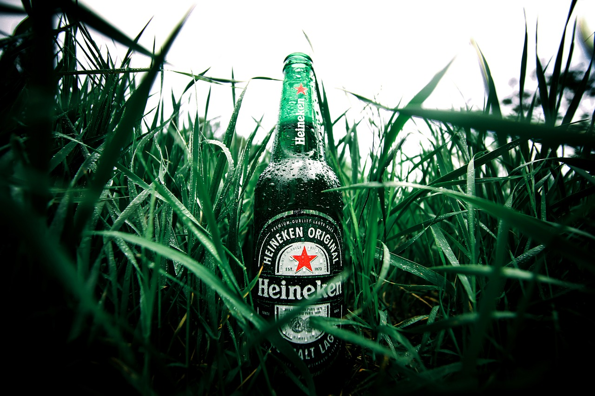
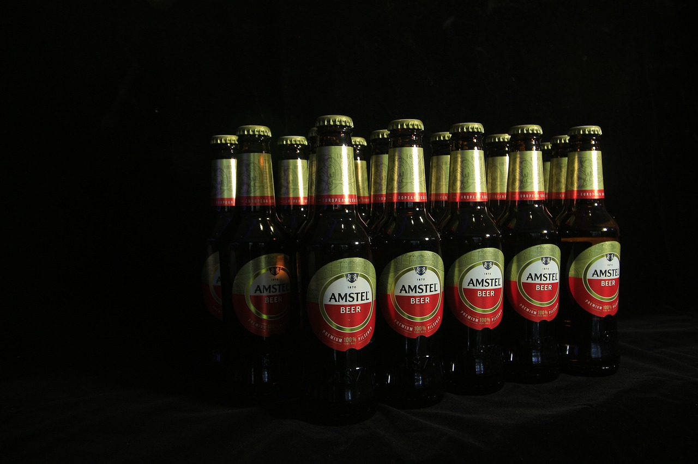
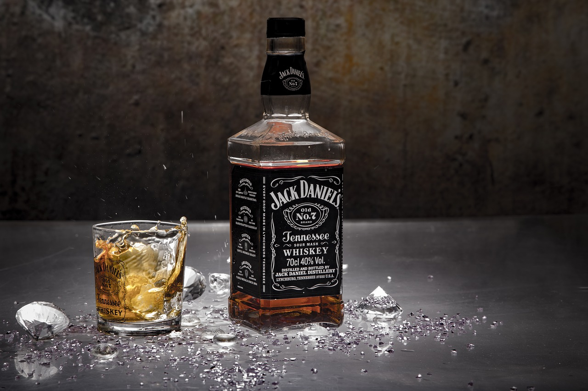
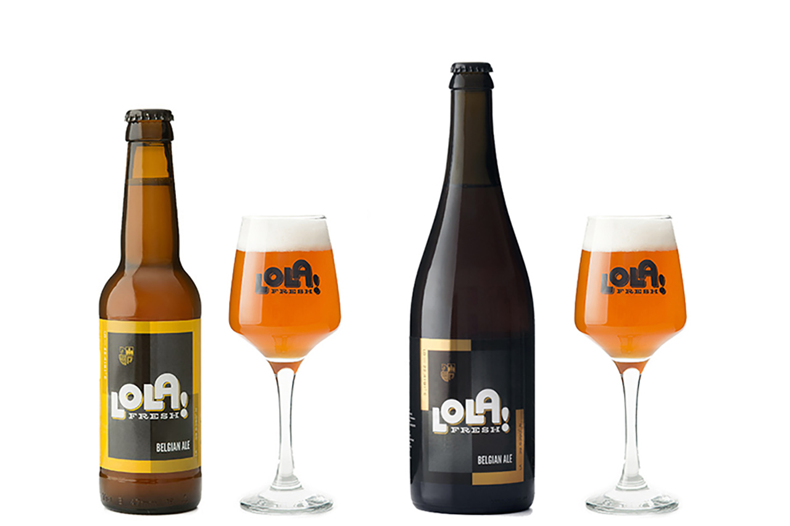

Order Heineken Beer
Heineken Lager Beer (Dutch: Heineken Pilsener), or simply Heineken (pronounced [ˈɦɛinəkə(n)]) is a pale lager beer with 5% alcohol by volume produced by the Dutch brewing company Heineken N.V. Heineken beer is sold in a green bottle with a red star.
Order

Order Amstel Beer
Amstel Brewery (Dutch: Amstelbrouwerij, Dutch pronunciation: [ˈɑmstəlbrʌwəˌrɛi̯]) is a Dutch brewery founded in 1870 on the Mauritskade in Amsterdam. It was taken over by Heineken International in 1968, and the brewing plant closed down in 1982, with production moving to the main Heineken plant at Zoeterwoude.
Order

Order Jack Daniels
Jack Daniel's is a brand of Tennessee whiskey. It is produced in Lynchburg, Tennessee, by the Jack Daniel Distillery, which has been owned by the Brown–Forman Corporation since 1956.
Packaged in square bottles, Jack Daniel's "Black Label" Tennessee whiskey sold 12.5 million nine-liter cases in the fiscal year ending on April 30, 2017.
Order

Order Lola Beer
Beer is one of the oldest and most widely consumed alcoholic drinks in the world, and the third most consumed drink overall after water and tea. It is produced by the brewing and fermentation of starches, mainly derived from cereal grains.
Order